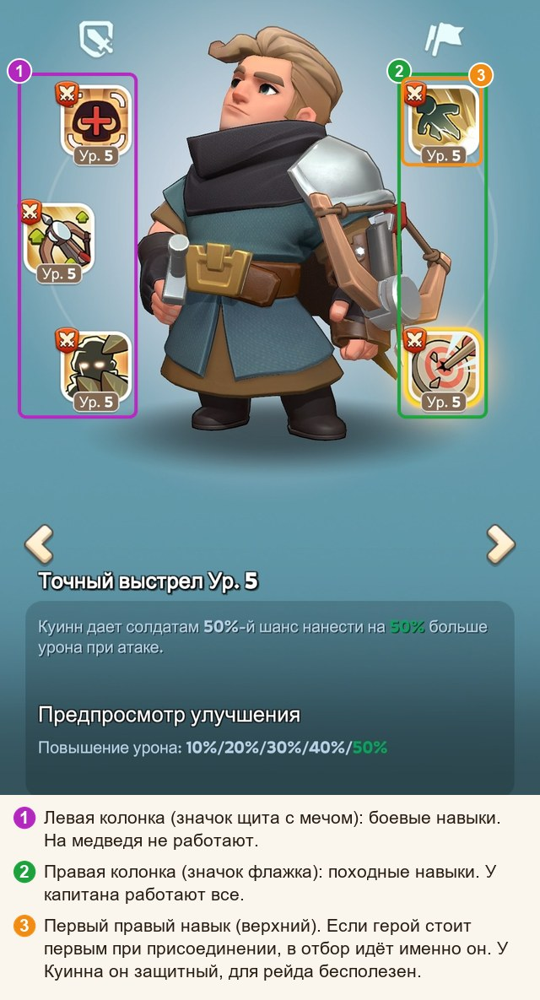
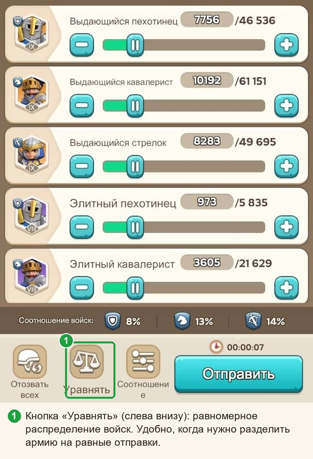

Охота на медведя: памятка
Гайды: Главная · Памятка (вы здесь) · Простыми словами · Почему так · Математика
Одна страница на случай «а как там было?». Хотите знать, почему именно так, — добро пожаловать в «Простыми словами».
Содержание
Главное в пяти строках#
- Рейд усиливает всех участников сразу: цифры капитана, навыки его героев и четыре навыка присоединившихся.
- Выбирайте рейд по таблице бонусов: чем выше «Смертоносность стрелков», тем лучше.
- Присоединяйтесь героем с полезным первым правым навыком (Ченко, Ёну, Амане, Хильда). Такого нет — ставьте первым героя с самым низким уровнем первого правого навыка.
- Армию делите на равные отправки и отправляйте, а не копите.
- Состав: когда войск много, около 5 % пехоты, 25 % кавалерии, остальное стрелки. Пока армия небольшая, проценты не нужны: просто делите всё поровну между отправками.
Где смотреть рейд#
В лобби рейда нажмите жёлтый флажок (1): откроется «Бонус рейда» с таблицей бонусов капитана, навыками его героев и четырьмя навыками присоединившихся.

Как выбрать рейд#
- Таблица «Бонус войск (от капитана)». Смотрите на «Смертоносность стрелков» (рядом с ней общая «Смертоносность войск»): у капитанов она ниже атаки и сильнее всего скачет от рейда к рейду, поэтому сравнивать проще всего по ней. Число выше — рейд лучше. Если смертоносность почти одинаковая, посмотрите «Атаку стрелков», затем кавалерию. Пехоту, защиту и здоровье не смотрите.
- Навыки капитана. Чем больше открытых походных навыков на атаку, смертоносность и повышение урона и чем выше их уровень, тем лучше.
- Четыре места присоединившихся. Если в них слабые навыки, а вы приносите полезный, вы усилите рейд и себе, и всем остальным. Если там уже четыре полезных навыка 5 уровня, свой навык низкого уровня приберегите для другого рейда.
- Понравился капитан? Нажмите звёздочку на карточке его рейда: рейды избранных капитанов показываются в списке сверху.

Какого героя ставить, когда присоединяетесь#
| Герой | Его первый правый навык | Прибавка на 5 уровне |
|---|---|---|
| Ченко | «Полная экипировка» | смертоносность +25 % |
| Ёну | «Готовность к бою» | смертоносность +25 % |
| Амане | «Тройная фаланга» | атака +25 % |
| Хильда | «Благородный путь» | атака +15 % |
- Этого героя ставьте первым (левым). Уровень навыка любой, лишь бы навык был открыт и работал: чем выше уровень, тем больше шансов попасть в четвёрку.
- Нужного героя нет? Первым ставьте того, у кого самый низкий уровень первого правого навыка (карточка героя, вкладка «Навыки»): система его не выберет.
- Второй и третий герои для рейда ничего не дают. Если войск много, берите тех, при ком больше вместимость марша (число после косой черты на экране «Отправить»). Если войск мало, героев 2 и 3 можно не брать вообще.
Как система выбирает четыре навыка присоединившихся#
- Берётся первый правый навык первого героя каждого присоединившегося.
- Навыки сортируются по уровню, от 5 к 1.
- Верхние четыре начинают работать на весь рейд.
Если уровни одинаковые, выше окажется тот, кто зашёл в рейд раньше. Навык 5 уровня занимает место, пока игрок в рейде. Решает уровень, а не польза: система читает цифры, а не описания, поэтому бесполезный навык 5 уровня вытеснит полезный 4 уровня.
На картинке слева боевые навыки (на медведя не работают), справа походные; первый правый навык отмечен оранжевой рамкой.


Состав и отправки#
- Пока армия небольшая (на состав по процентам не хватает), процентов не делайте: просто делите всё поровну между отправками. Поможет кнопка «Уравнять» на экране отправки (слева внизу).
- Когда войск много: пехота 2–5 %, кавалерия около 25 %, остальное стрелки. Если бонусы кавалерии у капитана заметно слабее, чем у стрелков, берите кавалерии 15 %; если сильнее, 35–40 %. Одни стрелки: теряете около 15 %. В каждой отправке держите один и тот же состав.
- Чем больше равных отправок, тем лучше: четыре равные отправки бьют вдвое сильнее, чем та же армия одним ударом.
- Берите войска самого высокого уровня; небольшая примесь слабого уровня почти не вредит.

Если вы капитан#
- Героев рейда выбирайте по таблице, а не по симпатии: поставили, открыли «Бонус рейда», сравнили. Навыки героев в таблице не отображаются, их смотрите отдельно, в блоке навыков. Если проседает смертоносность, берите героя, который прибавляет её сильнее; если атака, берите героя с большей атакой. Важнее всего герой стрелков, затем кавалерии, затем пехоты. Порядок героев не важен.
- Ченко, Ёну, Амане и Хильду лучше беречь для присоединения. Героев без полезных навыков (Диана, Олив, Говард, Фад, Сет, Форрест, Эдвин, все синие) в свой рейд не берите.
- Походные навыки героев на атаку, смертоносность и повышение урона («с шансом») качайте до 5 уровня.
- На героев своего рейда наденьте лучшее снаряжение на атаку и смертоносность (шлем и сапоги). Оно действует, только когда рейд создаёте вы.
- Смотрите «Участники рейда → Навыки героя». Если бесполезный навык высокого уровня вытеснил полезный, удалите такого игрока из рейда.
Прокачка по порядку#
- Если присоединяетесь к чужим рейдам: выберите одного героя из Ченко, Ёну, Амане, Хильды и доведите его первый правый навык до 5 уровня (одного героя достаточно). Затем качайте следующего из списка. Отправлять их вместе не нужно: в рейд идёт только первый герой.
- Если вы капитан: походные навыки героев рейда на атаку и смертоносность до 5 уровня, затем на повышение урона («с шансом»).
- Все войска переведите на самый высокий доступный уровень и только потом обучайте новых.
- Исследования: атака и смертоносность стрелков, затем кавалерии, пехота последней. Подтягивайте то, что меньше (атаку или смертоносность).
- Снаряжение героев на атаку и смертоносность: шлем и сапоги.
Что не нужно#
Защита и здоровье: медведь всё равно не отвечает. Блок «Завоевание» у героя. Порядок героев у капитана: не важен. Уровень и звёзды героя при присоединении (важен только уровень навыка). Пехота сверх 5–10 %.